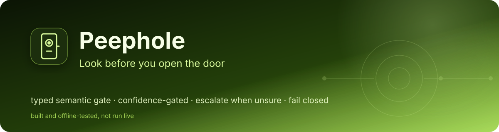
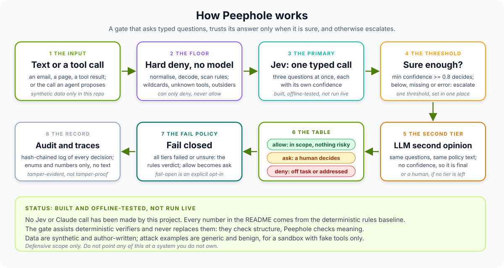

Portfolio project: semantic gate with confidence-based escalation
Peephole
Look before you open the door.
Whetstone sharpens, Peephole looks, Blast Door contains. Peephole is a small, typed semantic gate in front of an agent. It asks typed questions at two checkpoints: before the agent reads untrusted text, and before it runs a tool call. Each answer carries a confidence. When the gate is sure, one decision table turns the answers into allow, ask (a human decides) or deny. When it is unsure, or the model fails, it escalates, and if nothing trustworthy is left it fails closed. BUILT, OFFLINE-TESTED, NOT RUN LIVE: there is no live Jev or Haiku result anywhere in the repository, and every number on this page comes from a deterministic rules baseline.
See what is measuredView the repoWhat is not built
- BUILT, OFFLINE-TESTED, NOT RUN LIVE
- No live Jev or Haiku result
- 319 offline tests passing
- Numbers: rules baseline only (author-written, synthetic)
- Defensive scope only

01
The problem
Deterministic verifiers check structure. They cannot tell whether a piece of text is trying to instruct the assistant, or whether a tool call is consistent with the task. A semantic check could, but it must not be trusted blindly, and its value has to be measured beyond what plain rules already do.
The agent projects in this portfolio govern what agents may do. This one asks what a meaning-level check adds in front of them, and how you would know. So the project is as much the evaluation as the gate: held-out families the rules were never written for, false blocks counted next to catches, calibration measured by the harness rather than assumed, a chaos test for the failure path, and a live runner that is hard to run by accident. Deterministic verifiers stay in charge; Peephole never replaces them.
The dev score flattered the rules
Action
deny -> allowis 0/72 on dev and 16/37 on held-out. Both sets were written by the person who wrote the rules; only the held-out families show what an allow-list cannot see.The rules cannot say `ask`
On the 40 arguable action cases they score 3/40, because a regex allow-list answers yes or no. A justified
askcan only come from low confidence or escalation, which needs a model, and that part has not been run.Discussing an attack looks like carrying one
4 of 10 new security-awareness posts are held or denied by the pattern screen. A semantic gate might separate them; that is the first thing a live run should test.
02
How it works
A piece of untrusted text, or a proposed tool call, first meets a deterministic floor that can only deny. Otherwise the primary backend (Jev) is meant to answer all the typed questions in one call, each with its own confidence. At or above the one threshold the answers go through one table to a decision. Below it, or on failure, the cascade escalates to an LLM given the same questions and policy text. If no tier is decisive, the fail policy applies. Every decision is appended to a hash-chained log of enums, numbers and hashes, never the text.

Swipe the diagram sideways to see all of it.
Stages of the diagram, one at a time
Stage 1 The input: text or a tool call
Untrusted text before the agent reads it, or a proposed tool call before it runs.
Stage 2 The hard-deny floor: no model
Two or more strong rule matches, wildcards, unknown tools and outside recipients are denied deterministically. The floor can only deny.
Stage 3 Primary backend: Jev
Answers every typed question in one call, each with a confidence. Minimum confidence at or above the single threshold goes to the table.
Built, not run live. No call to Jev has ever been made by this project.
Stage 4 Escalation: an LLM second tier
Below the threshold, with a missing confidence, or when the call fails: same questions, same policy text, no confidence, final when reached.
Built, not run live. No call to Claude Haiku has ever been made by this project.
Stage 5 The decision table: one file
Typed answers become allow, ask or deny. The model never chooses the verdict directly.
Stage 6 The fail policy: closed by default
If no tier is decisive, the policy applies to the rules' verdict; by default allow becomes ask.
Stage 7 The record: audit and spans
A hash-chained audit log and OpenTelemetry spans that carry enums, numbers and hashes, never content.
03
What is measured
Every number below comes from the deterministic rules baseline (rules copied from Whetstone) on author-written synthetic data, run offline with fixed seeds by python -m evals.run_all and python -m pytest on Python 3.14.7 (arm64 macOS); the committed JSON is in evals/results/offline/. No model, no network, no key. There is no live Jev or Haiku result. Outputs produced with the MockBackend (a keyword stub for plumbing tests) are checks that the harness works, and are not shown as results.
detected means the decision is ask or deny. False block is a benign input that got ask or deny. Intervals are 95% Wilson.
| Split | Detected | Strict deny | False block | False deny |
|---|---|---|---|---|
| Dev (Whetstone's 11 families, 72 benign) | 50/55 = 90.9% | 42/55 = 76.4% | 8/72 = 11.1% | 3/72 = 4.2% |
| Held-out (7 new families, 68 new hard-benign) | 48/70 = 68.6% | 11/70 = 15.7% | 10/68 = 14.7% | 5/68 = 7.3% |
| All | 98/125 = 78.4% | 53/125 = 42.4% | 18/140 = 12.9% | 8/140 = 5.7% |
Caveat One author wrote the rules (copied from Whetstone), the typed mapping, the datasets and the labels. Held-out means families the rules were not written for, not independent data. This is not real traffic, the data is synthetic, and none of it describes Jev or any model.
Detection counts ask as caught: an ask is a hold for a human, not a block, which is why the strict-deny column sits beside it.
Source: evals/results/offline/summary.json
Detected out of 10 per family, rules baseline, offline.
| Family | Detected (of 10) |
|---|---|
| calendar_invite | 10 |
| forwarded_thread | 9 |
| table_cell | 8 |
| polite_user_voice | 7 |
| compliance_review | 6 |
| field_split | 6 |
| paraphrased_no_triggers | 2 |
Caveat Ten synthetic examples per family, written by the same author as the rules, so each row is a small sample. Whether a model closes the paraphrase gap is unmeasured.
Source: README.md, evals/results/offline/input.json
Headline numbers use the 230 firm labels. Under-block is a label of ask or deny with decision allow; deny -> allow is the worst error.
| Split | Exact match | Under-block | deny -> allow | Over-block (label allow) |
|---|---|---|---|---|
| Dev (215 cases written alongside the rules' checks) | 167/176 = 94.9% | 3/85 = 3.5% | 0/72 = 0.0% | 2/91 = 2.2% |
| Held-out (5 families the rules were not written for) | 37/54 = 68.5% | 16/37 = 43.2% | 16/37 = 43.2% | 1/17 = 5.9% |
Caveat The dev zero is authorship, not skill: the families were written knowing what the rules look at. The 40 arguable cases are reported separately (exact match 3/40 = 7.5%), because the rules never answer ask. Synthetic cases for a sandbox with fake tools.
Source: evals/results/offline/summary.json
In-process on one machine (arm64 macOS, Python 3.14.7), after warm-up.
| Gate (rules backend) | n | p50 | p95 |
|---|---|---|---|
| Input gate | 1,325 | 0.25 ms | 0.35 ms |
| Action gate | 1,350 | 0.016 ms | 0.021 ms |
Caveat No model call is included. A live Jev or LLM call would dominate by orders of magnitude and has not been measured.
Source: evals/results/offline/latency.json
04
Architecture pattern
Pattern Gate with confidence-based escalation: a typed, fast first tier over a deterministic floor, a slower second tier only when the first is unsure, a human last, and a stated fail policy (closed by default).
The model answers typed questions and a deterministic table decides, so a model never chooses the verdict directly. Confidence only decides whether to escalate, never whether to override a deterministic check. Every failure path ends in the same audited place, and a test fails if a path can end in a silent allow. Jev and the LLM backends are built and tested against stubs only.
- Input text or proposed tool call
- Hard denydeterministic, no model, can only deny
- Primary: Jevone call, typed questions, per-field confidence (built, not run live)
- Escalate to LLMbelow threshold, missing, or failed (built, not run live)
- Decision tabletyped fields to allow, ask or deny
- Fail policyclosed by default: allow becomes ask
- Hash-chained audit and content-free spans
Component tables, decision tables and the failure table in the repo
05
Competencies demonstrated
Evaluation under authorship bias
Rules committed before the held-out data was written; dev versus held-out reported side by side (90.9% to 68.6% detection); arguable labels reported separately.
Calibration and selective prediction
Reliability table, ECE, AURC and a risk-coverage curve in the standard library, pinned against hand-computed values. Not yet measured on a real model.
Cascade and failure design
Hard deny, Jev, LLM, fail policy; one threshold and one decision table; a chaos test that the fail-closed property cannot be broken silently.
Safe live-run engineering
Environment-only keys,
--liveand--yes, dry run with exact call counts, per-backend call cap, kill switch, key redaction, resumable state; 43 stub-driven tests.Privacy by construction
Audit records and spans carry enums, numbers and hashes; tests push sensitive strings through every input and assert none leak.
Honest scoping
Built, offline-tested, not run live, everywhere; the stub is labelled in code, in output files and in a test that scans the README.
06
What is not built or not verified yet
Listed from the repository's own README ("Not built / not run yet" and "Known limits"). No call to Jev or to Claude has ever been made by this project.
- not built
Any live Jev or Haiku result
The backends, the runner and the cascade replay are built and offline-tested only. There is no live result in the repository.
- not built
Jev calibration
Reliability, ECE and risk-coverage code is tested against hand-computed values; no real confidence has been measured. The multi-field output shape is read from documentation and source, not observed.
- not built
The Blast Door integration
A design note only: a semantic verdict that can only add friction, never remove it.
- not built
Adaptive attacks against the gate
All attacks are static and author-written; none was written against the gate's verdicts.
- not built
Cost and live latency measurement
The latency above is the deterministic layers only.
- limit
One author wrote everything
The rules, the mapping, 70 and 68 new inputs, 270 action cases and every label. Held-out means not written for, not independent.
- limit
Small, synthetic, generic data
Held-out has 70 injections, 68 benign and 54 action cases, so the intervals are wide. None of it is real traffic.
- limit
Reported confidence is not a probability
The default threshold 0.8 is a portfolio default, not a tuned value, and the harness has to measure calibration before it is trusted.
- limit
The audit chain detects, not prevents
The head hash is not anchored anywhere.
- not verified
CI results
I ran everything locally on Python 3.14.7 and, for the offline core and tests, on 3.9.6. CI runs 3.9 and 3.12; see the Actions tab in the repository.
07
Roadmap
- Not doneRun the live eval, small first (
--limit 10 --repeats 1on Jev), then the full set; compare against the rules on the held-out split - Not doneTune the threshold on dev only, report it on held-out, and show the risk-coverage curve rather than one point
- Not doneA second reviewer for the 40 arguable labels, with agreement reported
- Not donePoint Whetstone's adaptive attacker at the gate to see whether confident-wrong answers can be induced
- Not doneBuild the Blast Door pairing with a monotone rule: a semantic verdict can only raise the approval level
- DoneTwo gates, typed questions, one table, one threshold, hard deny, cascade, fail policy (offline-tested)
- DoneRules backend, Jev and LLM backends (lazy, stub-tested), 265 input examples and 270 action cases with a held-out split
- DoneGuarded, resumable live runner (stub-tested), hash-chained audit log, content-free spans, CLI